Regression
Two questions, one for each kind of regression. Can a vehicle's ratings, equipment and record predict how often its owners' complaints involve a crash? And can a single complaint be classified as a crash or not from the owner's own words, more reliably than Naive Bayes managed?
Overview
Linear regression predicts a number. It assumes the target can be written as a weighted sum of the inputs plus a constant, y = b0 + b1x1 + b2x2 + …, and it chooses the weights that make the squared distances between the predictions and the true values as small as possible. Those distances are the residuals, and squaring them means a few large misses cost far more than many small ones. Each weight, or coefficient, has a direct reading: it is the change in the prediction when that one input rises by one unit and every other input is held fixed. That readability is the method's great strength, and also its trap, because when two inputs move together the model cannot tell which one deserves the credit and the individual coefficients become unstable. A ridge penalty addresses this by adding a cost proportional to the squared size of the coefficients, which pulls them toward zero and shares credit between correlated inputs; the strength of that penalty, alpha, is a setting to be chosen.
Logistic regression predicts which of two classes a record belongs to. It begins exactly as linear regression does, by forming a weighted sum of the inputs, but that linear score z can be any number from minus to plus infinity and is not yet a probability. The sigmoid function, σ(z) = 1 / (1 + e−z), squeezes the score into the range 0 to 1: large positive scores approach 1, large negative scores approach 0, and a score of exactly 0 maps to 0.5. That number is read as the probability of the positive class, and it becomes a class by comparing it with a threshold, normally 0.5. Because the weights are fitted by maximising the likelihood of the observed labels rather than by minimising squared error, each coefficient has a precise meaning on the odds scale: raising an input by one unit multiplies the odds of the positive class by eb.
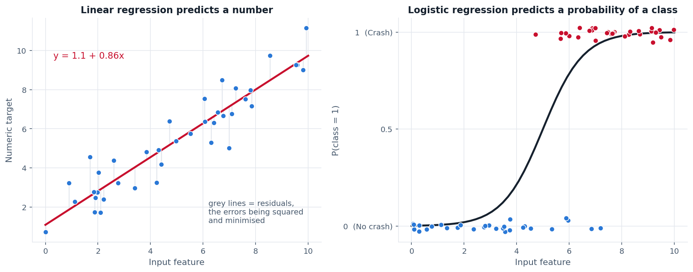
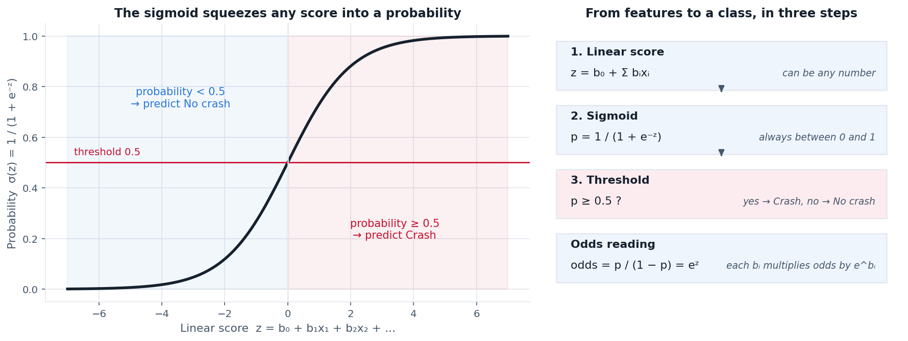
The two differ in what they predict, how they are fitted and how they are judged. Linear regression outputs a number, minimises squared error, and is judged by how far its predictions land from the truth (RMSE, MAE) and how much of the variation it explains (R²). Logistic regression outputs a probability, maximises likelihood, and is judged like any classifier, with a confusion matrix. Both are linear in the inputs, which keeps them fast, transparent and hard to overfit, and both are blind to interactions unless those are added by hand.
How they are used here. Linear regression takes the 218 vehicles whose complaint record is large enough to trust and asks whether their crash rate can be predicted from what a buyer can see in advance — star ratings, rollover probability, standard equipment, body type — together with the shape of their complaint record. Logistic regression returns to the task Naive Bayes attempted in Part 3, classifying each complaint as a crash or not from its narrative, on exactly the same complaints, words and test set, so the two text classifiers can be compared directly.
Data Prep
Both models are supervised, so both need labelled data: every row must carry the answer the model is trained to reproduce. The two models need different kinds of answer. Linear regression needs a numeric target, and logistic regression needs a two-class label.
Linear regression: one row per vehicle
The target is crash_rate_pct, the percentage of a model-year's
complaints that involved a crash, taken from the joined model-year table built
in Module 1. Model-years with fewer than 20 complaints were removed first,
because a rate computed from a handful of reports is mostly noise: one vehicle
with seven complaints showed a crash rate of 43%. That leaves 218
model-years. Seventeen numeric inputs were used:
- Crash-test ratings: overall, front-crash, side-crash and rollover stars, and rollover probability in percentage points.
- Equipment: whether forward-collision warning and lane-departure warning are standard (0 or 1).
- Body segment: categorical, so it was one-hot encoded into six 0/1 columns with SUV as the reference level, which means each segment coefficient reads as "compared with an SUV".
- Ownership record: mean vehicle age at incident, median days to report, and the logarithms of complaint and recall counts, which span three orders of magnitude.
Crash, injury and severity counts were deliberately left out. They are built from the same reports as the target, so including them would let the model read the answer instead of predicting it.
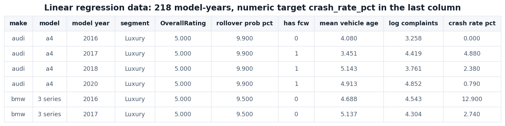
The rows were split 75/25 at random with a fixed seed into 163 training and 55 testing vehicles. The split is not stratified because the target is a number rather than a class. The code checks that no make, model and year appears in both sets. That separation is what makes the test meaningful: a model scored on vehicles it was fitted to would be rewarded for memorising their crash rates rather than for predicting new ones. Every setting was then chosen with 5-fold cross-validation inside the 163 training vehicles; the 55 test vehicles were used once, at the very end.
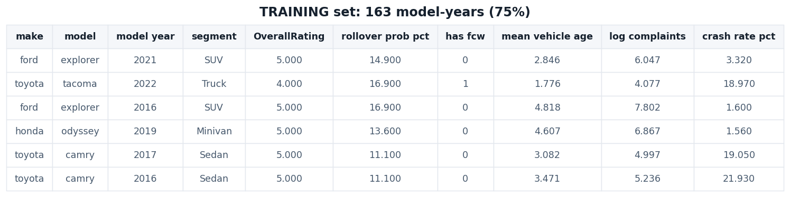
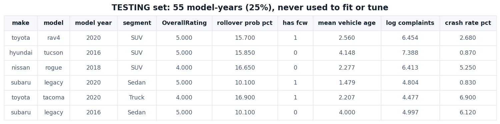
Logistic regression: one row per complaint
Logistic regression uses exactly the same data as the Naive Bayes
tab: the 83,282 complaints with narratives of at least five words, the label
Crash or No crash taken from the crash field on the
federal complaint form, and the same word-count matrix — English stop words
removed, terms in fewer than five documents dropped, the 6,000 most frequent
kept. The vocabulary is learned from the training set only and then applied to
the test set unchanged.
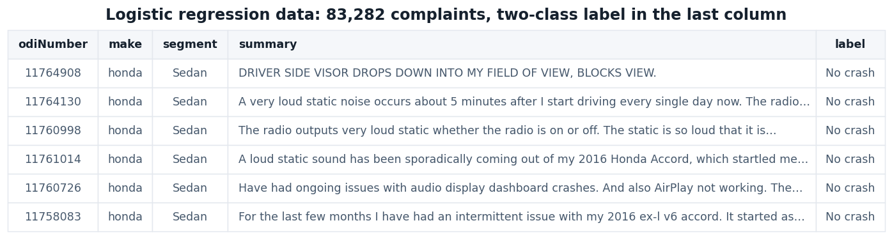
The split is the Naive Bayes split reproduced exactly: 75/25, stratified on the label, same seed, giving 62,461 training and 20,821 testing complaints with the same 4.74% crash rate. The code asserts that no complaint ID appears in both sets and that the test set matches the one Naive Bayes was scored on, row for row. The sets must be disjoint because a model scored on rows it learned from is being asked to remember rather than to generalise, and the score it reports would not hold up on any new complaint. For the same reason the settings were chosen by 5-fold cross-validation within the training set, and the test set was touched only once.
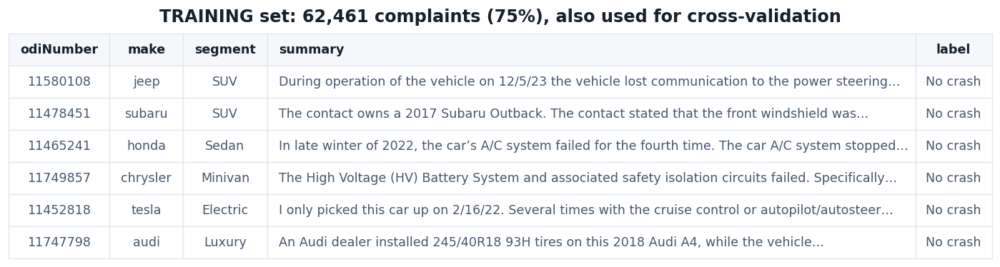
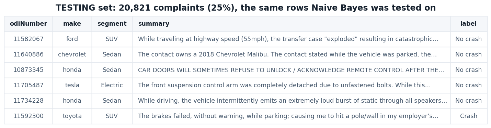
Data and code. Raw data: data/raw/ · Cleaned source tables: vehicle_model_year.csv, complaints_clean.csv.gz
Linear regression: prepared data reg_linear_data.csv · training set reg_linear_train.csv · testing set reg_linear_test.csv · cross-validation grid reg_linear_cv.csv · coefficients reg_linear_coefficients.csv · test metrics reg_linear_results.csv
Logistic regression: labelled data nb_labeled_sample.csv · training sample reg_logistic_train_sample.csv · testing sample reg_logistic_test_sample.csv · cross-validation grid reg_logistic_cv.csv · coefficients reg_logistic_coefficients.csv · test metrics reg_logistic_results.csv
Code
The analysis is Python, in
regression_analysis.py, using
scikit-learn. Linear regression uses LinearRegression and, for the
penalised variant, Ridge, each inside a pipeline with
StandardScaler so that the penalty treats every input on the same
scale. Cross-validation uses KFold with five folds. Logistic
regression uses LogisticRegression with the
liblinear solver on the sparse word-count matrix from
CountVectorizer, tuned with StratifiedKFold. The
script refits both Naive Bayes models from Part 3 on the same matrix and
confirms they reproduce the published Part 3 results exactly before comparing
against them.
Results
Linear regression: choosing the settings
Two settings were chosen by cross-validation on the training vehicles: which group of inputs the model may use, and the ridge penalty alpha, where alpha = 0 is plain least squares. The baseline is a model that ignores every input and predicts the average crash rate.
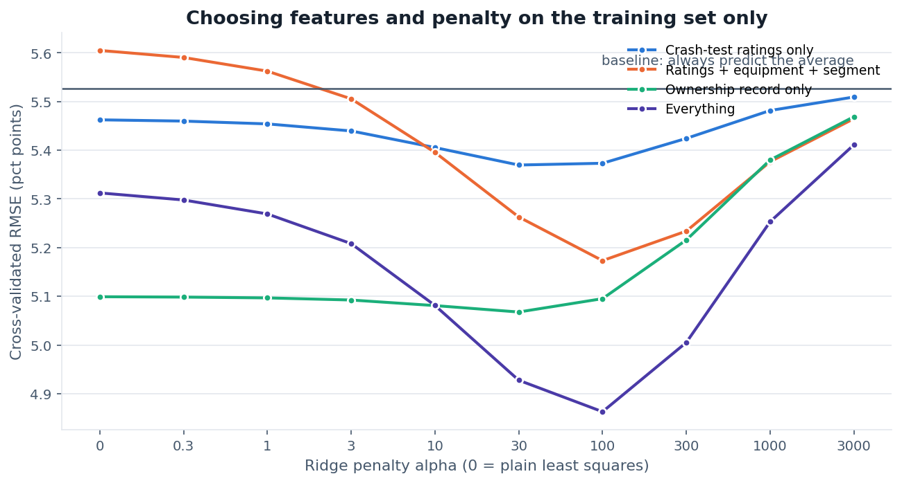
| Inputs allowed | Best CV RMSE | at alpha | Reading |
|---|---|---|---|
| Baseline: predict the average | 5.53 | — | the bar to beat |
| Crash-test ratings only | 5.37 | 30 | 3% better than guessing |
| Ratings + equipment + segment | 5.17 | 100 | 6% better |
| Ownership record only | 5.07 | 30 | 8% better |
| Everything | 4.86 | 100 | 12% better; cross-validated R² 0.22 |
Linear regression: the held-out test
| Model, scored once on the 55 test vehicles | RMSE | MAE | R² |
|---|---|---|---|
| Chosen model: everything, ridge alpha = 100 | 3.39 | 2.56 | −0.03 |
Plain LinearRegression, same inputs | 4.18 | 3.10 | −0.56 |
| Baseline: training-set average | 3.58 | 3.06 | −0.14 |
Errors are in percentage points of crash rate. The chosen model lands on average 2.6 points from the true crash rate, against 3.1 for the baseline, a 16% reduction in absolute error. Its R² is nonetheless slightly below zero, and the reason matters. R² on a test set compares the model against the test set's own average, which no model can know in advance. These 55 vehicles happen to have a lower average crash rate than the training vehicles (5.5% against 6.8%) and far less spread (a standard deviation of 3.4 points against 5.5), so even the honest baseline scores −0.14. Against that bar the chosen model is clearly better, but it explains essentially none of the variation in crash rate from one test vehicle to the next. Plain least squares, without the penalty, does worse than the baseline on the test vehicles. Cross-validation had already ranked it well behind the penalised model (an RMSE of 5.31 against 4.86), and the test confirms why the penalty was needed: with seventeen correlated inputs and only 163 rows, the unpenalised coefficients chase noise.
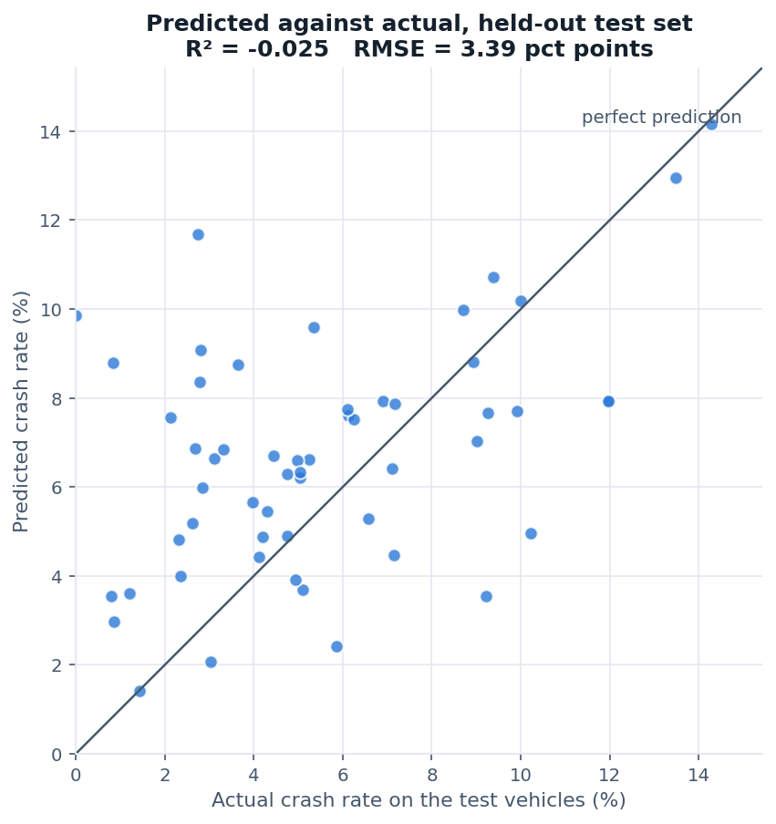
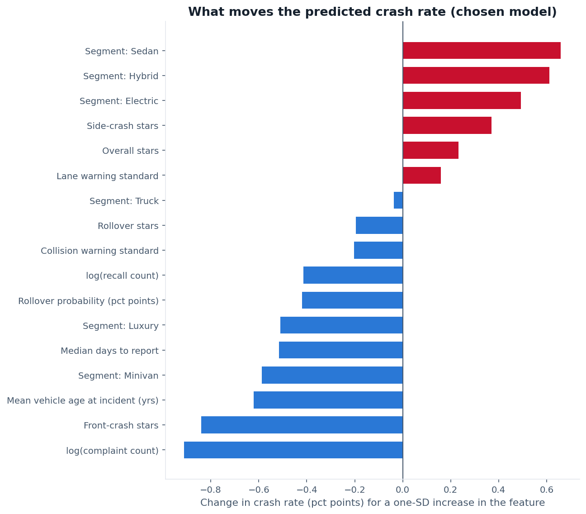
Two coefficients in plain words. Coefficients are read from the chosen model in each input's own units.
- Mean vehicle age at incident: −0.47 points per year. Holding everything else fixed, a model-year whose problems typically surface one year later in the vehicle's life has a crash rate about half a percentage point lower. Faults that appear in older vehicles are more often wear — leaks, electrics, corrosion — and less often collisions.
- Front-crash stars: −1.65 points per star. A vehicle with one more front-crash star has a crash rate about 1.7 points lower, all else equal. Side-crash stars point the opposite way (+2.66 per star), however, so the laboratory ratings disagree with each other about the direction of the effect. With most vehicles rated four or five stars, these coefficients rest on very little variation and should not be read as causal.
Logistic regression: choosing the settings
Two settings were chosen by 5-fold cross-validation on the 62,461 training complaints: the inverse regularisation strength C (smaller C means a stronger penalty) and whether the rare Crash class is reweighted. The selection criterion was F1 on the Crash class rather than accuracy, because on a 4.7% class accuracy rewards a model for saying "no crash" to everything.
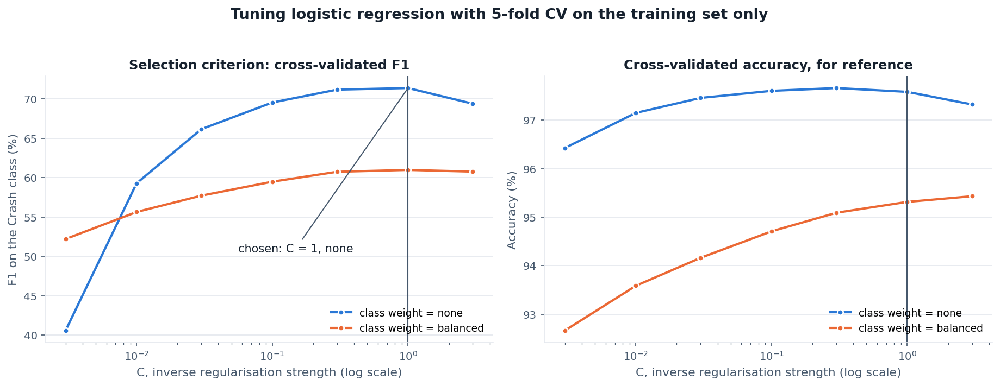
Logistic regression: the held-out test, against Naive Bayes
| Model, same 20,821 test complaints | Accuracy | Precision (Crash) | Recall (Crash) | F1 (Crash) |
|---|---|---|---|---|
| Logistic regression (C = 1) | 97.84% | 0.830 | 0.684 | 0.750 |
| Bernoulli NB (Part 3) | 95.17% | 0.494 | 0.806 | 0.613 |
| Multinomial NB (Part 3) | 94.41% | 0.452 | 0.830 | 0.585 |
| Majority-class baseline | 95.26% | 0.000 | 0.000 | 0.000 |
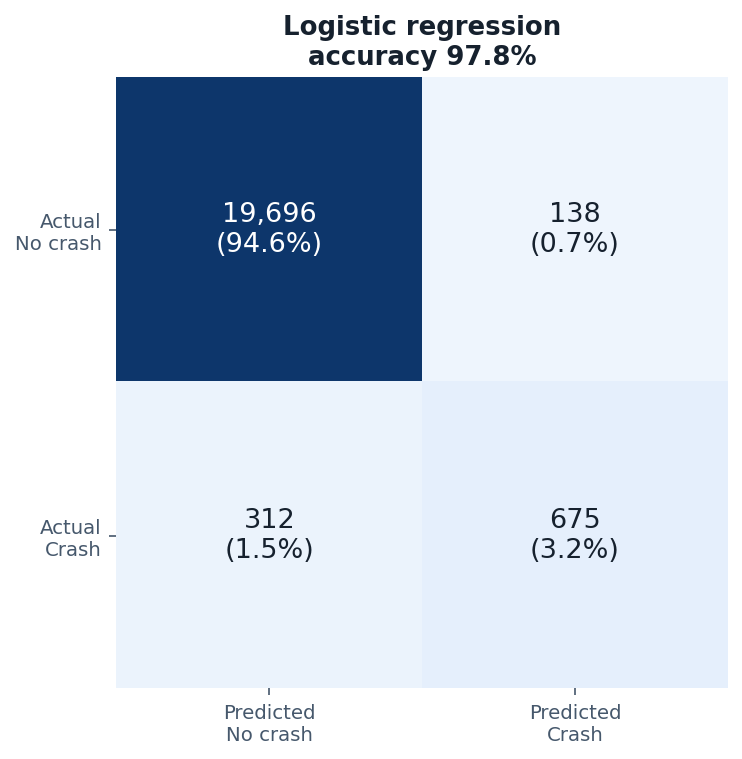
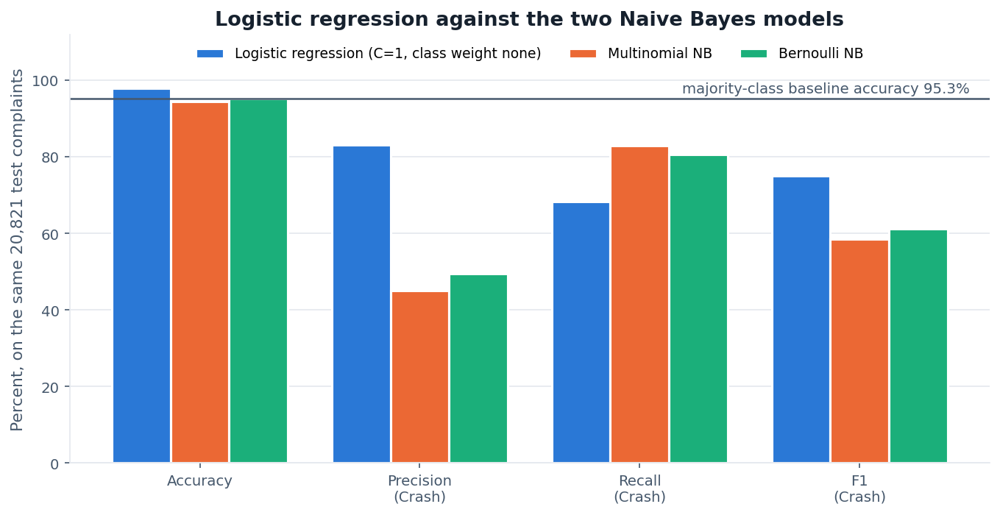
Logistic regression beats both Naive Bayes models, and the margin is large. Against the better of the two, Bernoulli, F1 rises from 0.613 to 0.750 (+0.137, about 22% higher), precision from 0.494 to 0.830, and accuracy from 95.17% to 97.84%, the only figure on this site so far to clear the 95.26% baseline. The cost is recall: logistic regression finds 68% of crashes where Naive Bayes found 81–83%. The difference has a clear cause. Naive Bayes treats each word as independent evidence and counts it in full, so a dozen weakly related words can stack up into a confident wrong answer. Logistic regression fits all the weights together and discounts words that only ever appear alongside stronger ones, which is precisely what removes most of the false alarms.
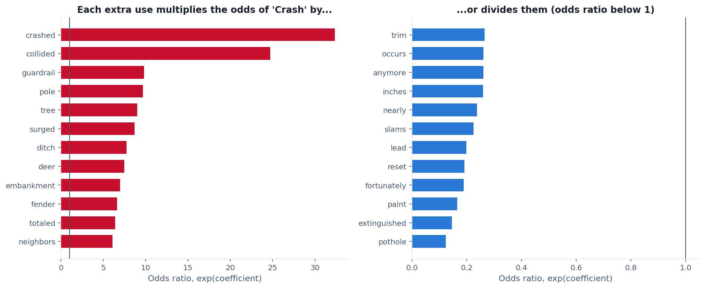
One coefficient in terms of odds. The coefficient for pole is 2.27, so each use of the word multiplies the odds that the complaint describes a crash by e2.27 ≈ 9.7. The model's intercept is −3.61, which corresponds to a probability of about 2.6% for a narrative containing none of the informative words. A single mention of pole raises the odds from 0.027 to 0.26, which is a probability of about 21%; the word alone moves a complaint from very unlikely to plausible, and one or two more crash words push it over the 0.5 threshold. The words that divide the odds are as revealing: nearly, fortunately and pothole each cut the odds by a factor of four to eight, because they are the language of incidents that stopped short of a collision.
Conclusions
The clearest lesson from this tab is that the crash rate of a vehicle is hard to predict from anything a buyer can see. Star ratings on their own did little better than guessing the average, and even with every rating, every piece of equipment, the body type and the vehicle's own complaint history, the best model explained only a modest share of the differences between vehicles and none of the differences among the vehicles it was tested on. A higher-rated vehicle is not reliably one whose reported problems end in collisions less often, and the ratings did not even agree with one another about which way the effect runs.
What did carry some signal is the shape of a vehicle's ownership record. Vehicles with many complaints tend to have a lower share of crash complaints, because large complaint volumes are dominated by everyday faults rather than collisions, and vehicles whose problems arrive later in life tend to have fewer crashes among them. Sedans, hybrids and electric vehicles carry higher crash shares than sport-utility vehicles and minivans once everything else is held equal, matching what the exploratory analysis first suggested.
The complaint narrative, by contrast, is highly predictable. Reading the owner's words with a method that weighs them all together identifies two crashes in three while raising very few false alarms: of every six complaints it flags, five genuinely involve a crash. That is a large improvement on the counting approach from Part 3, and it turns the narrative field from something that must be read by hand into something that could reliably sort a regulator's in-tray, putting the reports most likely to describe a collision at the top.
Taken together, the two halves repeat the pattern seen in the Decision Trees tab. What happened in a particular incident is recorded clearly in the words of the person it happened to; what kind of vehicle it happened in says very little about it. The information that best predicts real-world harm is not the laboratory score printed on the window sticker but the testimony that accumulates after the vehicle is sold.